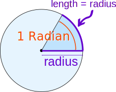
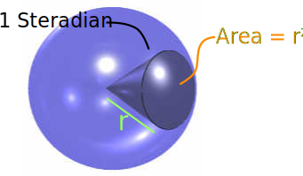
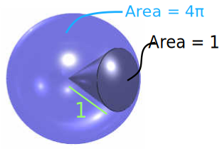

Steradian
A steradian is used to measure "solid angles"
A steradian is related to the surface area of a sphere
in the same way a radian is related to the circumference of a circle:
| A Radian "cuts out" a length of a circle's circumference equal to the radius. |  | |
| A Steradian "cuts out" an area of a sphere equal to (radius)2. |
 |
Sphere vs Steradian
- The surface area of a sphere is 4πr2,
- The surface area of a steradian is just r2.
So a sphere measures 4π steradians, or about 12.57 steradians. Likewise a steradian is 1/12.57, or about 8% of a sphere.
And because we measure an angle, it doesn't matter what size the sphere is, it will always measure 4π steradians.

Example: The "unit sphere":
- has a radius of 1
- has a surface area of 4π,
- a steradian "cuts out" an area of 1.
Radiant Intensity
Radiant intensity (how brightly something shines) can be measured in watts per steradian (W/sr).
Example: You measure the light coming from a powerful globe.
Your sensor is 50mm × 50mm in size, and if you hold it 2m away it measures 0.1 Watts.
What is the radiant intensity in W/sr (Watts per steradian)?
Answer: At 2m, one steradian cuts through 2×2 = 4 m2 of the sphere.
And because the sensor is relatively small, its flat surface area is approximately the area of sphere that it occupies. So 0.05 × 0.05 = 0.0025m2.
So, one steradian receives about 0.1 W × (4m2/0.0025m2) = 160 W/sr.
In Degrees
Because we can convert from radians to degrees we can also convert from steradians to "square degrees":
A radian is 180/π degrees, or about 57.296°.
A steradian is (180/π)2 square degrees or about 3282.8 square degrees.